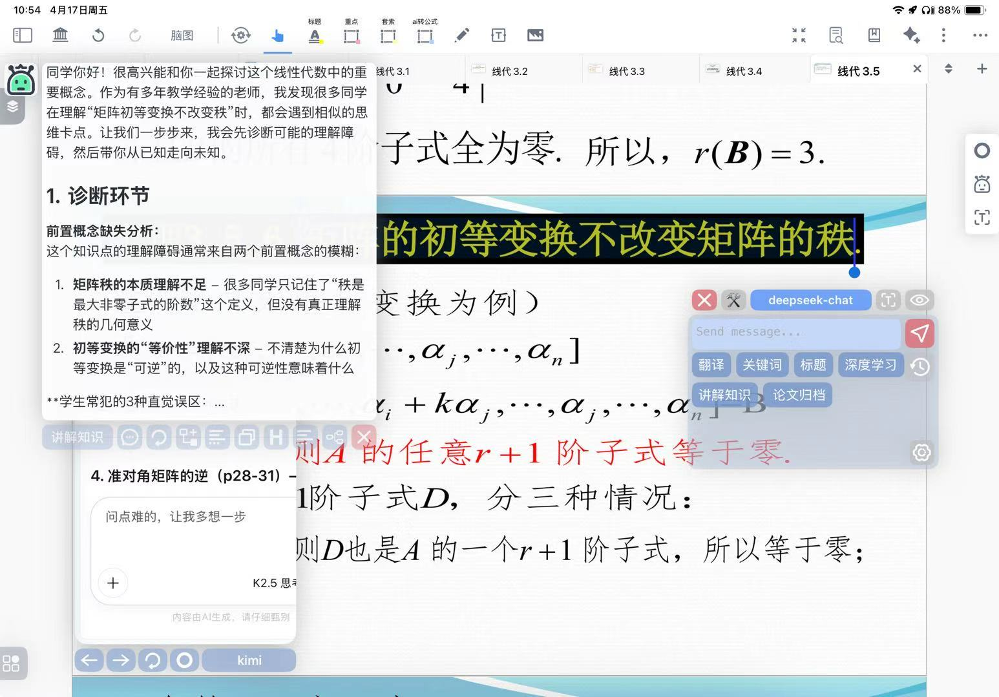
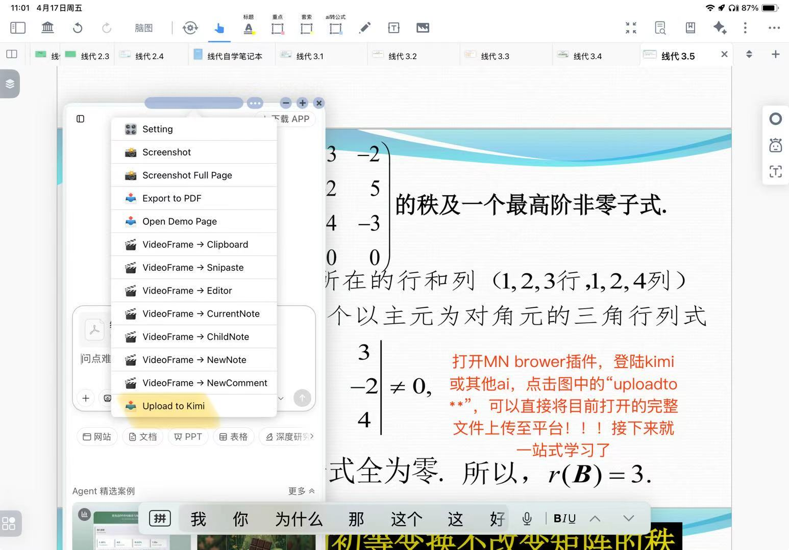
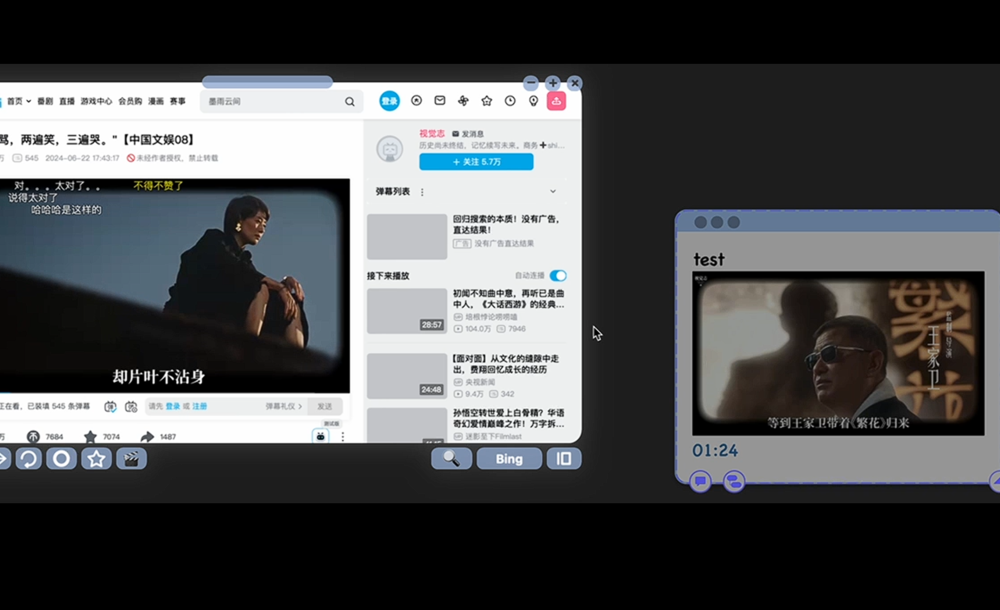

为什么推荐
MarginNote 4？
在笔记软件泛滥的今天，MarginNote 4 依然是市面上唯一一款真正实现「文档-脑图-卡片」三位一体深度融合的学习工具。
它不仅仅是一个 PDF 阅读器，更是一个知识网络建构器：文档层支持原生 PDF/EPUB，脑图层一键将摘录转为思维导图节点，卡片层则基于间隔重复（SRS）将知识转化为长期记忆。
跨端同步，无缝衔接
iPad、Mac 双端实时同步。移动端采集 + 桌面端深加工，让碎片记录沉淀为体系化知识库。
手写笔记的认知不可替代性
1. 空间记忆:手写圈画、箭头、疑问标记保留了你当时的注意力路径，回看时能瞬间复原「我当初为什么在这里困惑」 2. 激活运动皮层：手写涉及复杂的手眼协调，这些物理动作会双重编码（dual coding），建立更强的记忆痕迹 3. 非线性表达：突然想到关联概念？在旁边画个气泡连线
现状:从「海量信息」到「一体式学习」
课堂上,当老师讲解的知识点使你困惑,在复制粘贴到其他软件的片刻功夫,回过神来已然是不知所云.课堂下,长达几十页的课件、上百页的课本，让我们无从下手. 每每在深度学习中遇到一个不懂的知识，workflow 变成了：
- 选中文字 → 复制 or 截图裁切
- 切换到浏览器 → 粘贴到 AI 对话框
- 得到解释 → 手动整理到笔记软件
- 回到 PDF → 打断心流状态
核心痛点
事物来回切换的摩擦成本，正在吞噬专注力。
AI 时代最好的老师的确是 AI。它不会厌烦你的重复提问，不会受限于 office hour。但问题是——如何让 AI 无缝嵌入知识建构流程，而非成为一个割裂的外部搜索引擎？
MN chatai:知识建构 Workflow
MN ChatAI 不是简单的「在笔记软件里嵌套一个聊天窗口」。它通过预定义变量实现了 AI 与笔记内容的深度耦合。
核心变量系统
{{selectionText}}
{{context}}
{{card}} / {{knowledge}}
prompt：深度学习
知识考古师
- 纵向深挖：追溯概念历史起源，谁发现？解决了什么问题？
- 横向贯通：连接数学/物理/工程中的不同表现形态
- 前沿映射：在现代 AI/通信/控制系统中的最新应用
prompt：名师辅导
苏格拉底式私教
- 诊断：分析常见理解误区（"你可能混淆了 xx 和 xx"）
- 搭桥：从已知的旧知识引导到新概念
- 检验：生成自测题，给出思维路径提示而非直接答案
使用场景展示

选中即问，深度解释
选中"矩阵的初等变换"，AI 自动诊断学习障碍并引导

一键上传，完整分析
Upload to Kimi 直接将完整文件上传至平台

视频学习，无缝截图
B站学习时直接截图，无需来回切换应用
MN Browser：打造 AI 知识库
场景一：完整文件上传，实现笔记学习并行。
场景二：视频摘要，B站大学学习时直接截图，告别来回切换的烦恼。
登录 Kimi 或其他 AI
直接将完整文件上传至平台
AI 自动分析并关联笔记内容
工具是杠杆，好奇心是支点
这套 workflow 的核心不是「用 AI 偷懒」，而是把 AI 当作一个不知疲倦的知识策展人（Curator）。它帮我完成了从「信息收集」到「知识网络」的关键一跃，让我能把认知资源集中在创造性思考而非机械整理上。
当课件不再是一座孤岛，当每一个概念都自动连接到更宏大的知识图景，学习就从「应付考试」变成了探索发现。
你的知识库，值得拥有一个 AI 引擎。
延伸阅读与资源
MN ChatAI 官方讨论区